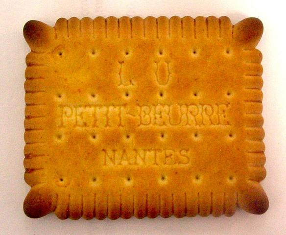
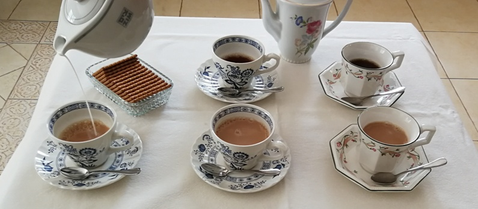

ה
פ
ס
ק
ת
ת
ה
הפסקת תה ורקיקים - 1/2 שעה
זה הזמן להניח את כל המחלוקות בצד ולצאת להפסקת תה. בהתאם להסכמי העבודה עם האיגודים המקצועיים, יוצאים העובדים להפסקת תה בת 1/2 שעה. מחלקת התה תעבור עם עגלת התה בין ארבעת המתמודדים (וגם המנחה) ותגיש להם תה ב-3 אפשרויות: נקי, עם מעט חלב, עם פרוסונת לימון. כמו כן, תציע להם רקיקים (ביסקוויטים) לטבילה בתה.


במהלך הפסקת התה יענו המתמודדים על שאלה אחת של המנחה, כגון: מהו הספר האהוב עליהם ביותר (ומדוע ?), מהו הסרט האהוב עליהם ביותר (ומדוע ?). מנוחה זו חיונית לעוסקים בעמל יומם לקראת שני השלבים הבאים.